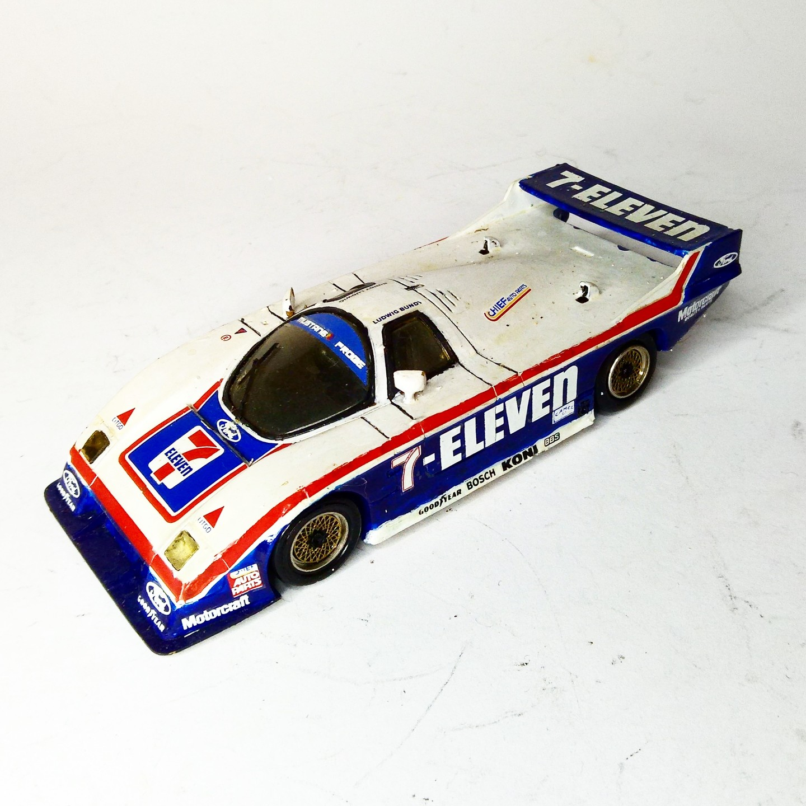
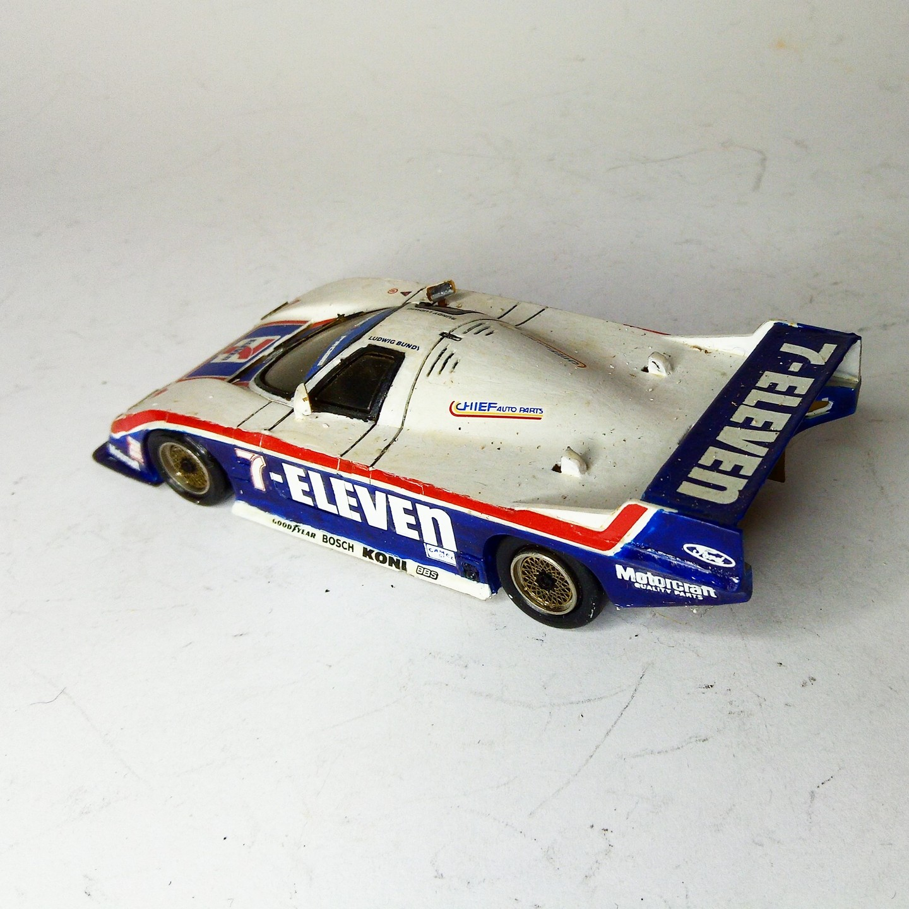

Auto e veicoli stradali · scale model archive
Ford Mustang Probe Zakspeed GTP
Ford Mustang Probe Zakspeed GTP — Kit: resin, Scale: 1/43. 1986 IMSA #1/43 #Resin #Ford #Mustang #Probe #Zakspeed

Photo gallery

English description
1986 IMSA
#1/43 #Resin #Ford #Mustang #Probe #Zakspeed
Descrizione italiana
IMSA 1986.